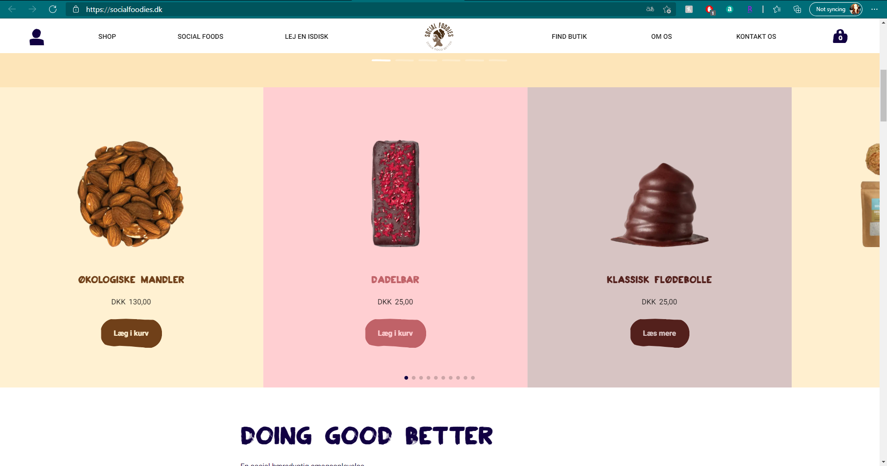
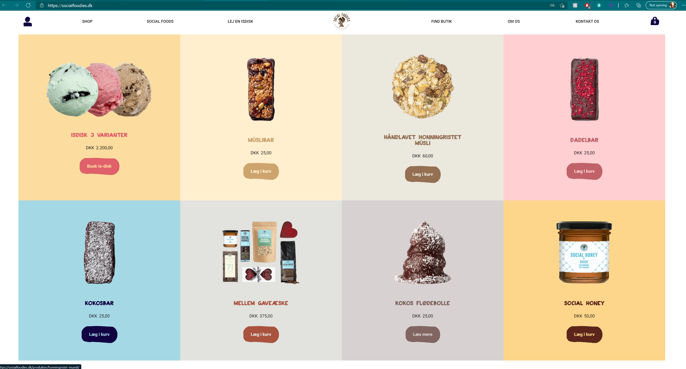
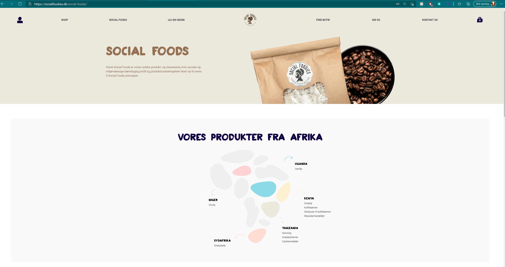
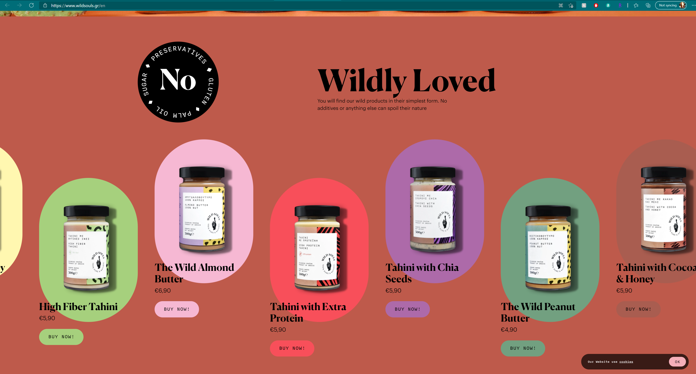
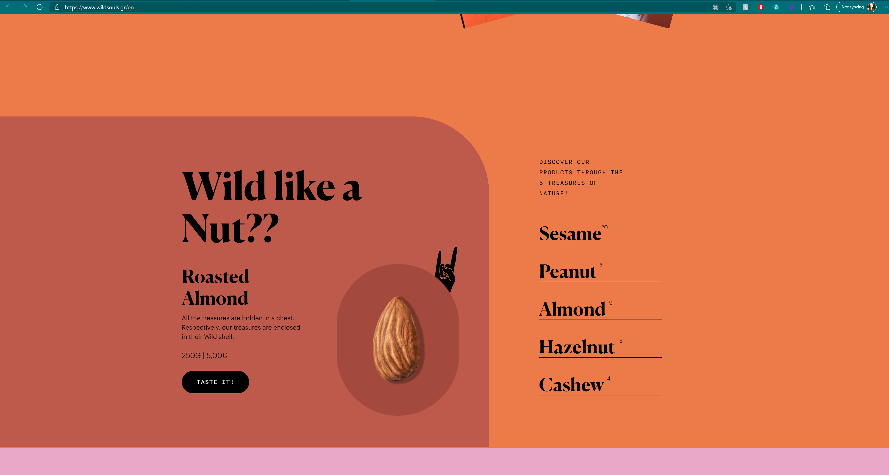

Design Document
For Art 324 - Spring 2021 portfolio final.
While I searched for the inspiration I needed to create my portfolio, I found many great sites that I would draw ideas from.
I chose three in particular that really shared the same kinds of layouts and color schemes that I looked at and decided to use within the file.
Below I will point out what stood out to me, the things that I liked and things I would perhaps change if it was my website and why.
My Layout Ideas:




The use of cards and colors throughout this website really inspired me. I felt that it was very similar to the way that I would create my own wesbite, especially if it recolved around food. The use of colors is free, playful but also soothing - not too overwhelming and the text is entirely readable.
Wild Souls: https://www.wildsouls.gr/en





I felt that the 'Wild Souls' website has amazing interactivity and gave me so much inspiration to grow with the use of onloads and animations.
The color palette, I felt, worked beautifully with their message and products. I felt like I was having so much fun! A big plus is that many websites that sell or vouch for natural products are often underwhelming and not very modern, with this website I felt the total opposite and really love the european feel of it.
Hannah Nelson